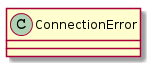
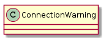
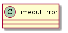
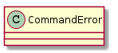
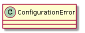
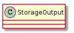

These are Errors that are raised which can be caught by any class (as opposed to Infrastructure errors).
This is raised when the connection is unable to communicate with a device. It should be a fatal error.

These are errors which may not necessarily be fatal - e.g. trying to do something which is prohibited by permissions.

The TimeoutError is a general error to be raised when a socket or file-like object times-out.

The CommandError is an error that a command raises when something command-specific created an error. The severity of this error has to be determined by the user of the command.

Configuration Errors are raised if there was a problem with the user’s configuration. These should be fatal, as they indicated a disparity between what the user indicated was expected or desired and what was actually found.

Storage Errors are raised by the StorageOutput on encountering errors writing to the output file.
